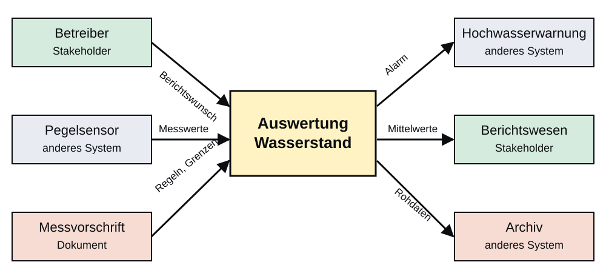

Anforderungen
Vom Problem zum Prompt

If I had asked people what they wanted, they would have said faster horses.
— Henry Ford
Ein Coding-Agent meldet nach einigen Minuten: „Aufgabe erledigt.“ Woher wissen wir, ob das stimmt? Die Frage lässt sich nur beantworten, wenn vorher festgelegt wurde, was „erledigt“ bedeutet. Genau das ist die Aufgabe von Anforderungen, und um sie geht es in diesem Kapitel.
Warum Anforderungen?
Ein Satz, drei Ergebnisse
Ein Agent erfüllt den Prompt, den er bekommt, nicht die Absicht dahinter. Wo der Prompt eine Lücke lässt, setzt er eine plausible Annahme ein und fragt in der Regel nicht nach. Dieses Kapitel zeigt, dass die Lücken im Prompt Lücken in den Anforderungen sind, und stellt die Methoden des Requirements Engineering vor, mit denen sie sich schließen lassen.
Wir beginnen mit einem Auftrag, wie er im Projektalltag häufig formuliert wird: „Berechne den mittleren Wasserstand.“ Dazu liegen die Messwerte einer Pegelmessstation vor, bei der nach der Konvention der Station der Wert −999 für einen fehlenden Messwert steht.
| Zeit in h | 0 | 1 | 2 | 6 |
|---|---|---|---|---|
| Pegel in m | 2,30 | 2,32 | −999 | 2,60 |
Aus diesem einen Satz lassen sich drei Programme ableiten, die den Wortlaut alle erfüllen. Zählt das Programm alle Einträge einschließlich des Platzhalters, ergibt sich ein Mittelwert von −247,945 m, der physikalisch sinnlos ist. Überspringt es den Platzhalter und mittelt die drei gültigen Werte, erhalten wir 2,407 m. Berücksichtigt es zusätzlich, dass die Messzeitpunkte ungleich verteilt sind, und gewichtet es die Werte mit der Trapezregel nach ihrem zeitlichen Abstand, ergibt sich 2,435 m.
Der Satz legt also weder fest, ob −999 als Messwert oder als Platzhalter für einen Ausfall zu behandeln ist, noch, ob ungleich verteilte Messzeitpunkte gleich oder nach ihrem Abstand gewichtet werden sollen. Ein Mensch im Projektteam kennt die Konvention der Messstation und würde sie stillschweigend anwenden. Ein Agent kennt sie nur, wenn sie im Prompt oder in den Dateien steht, die er liest. Die Beispieldaten sind erfunden und dienen nur dazu, die drei Lesarten rechnerisch zu trennen; die Ergebnisse sind nachgerechnet.
Dass Agenten solche Lücken tatsächlich mit plausiblen Annahmen füllen, zeigt eine Analyse von 20.574 realen Sitzungen mit Coding-Agenten (Tang u. a. 2026). In 44,10 % der Episoden, in denen der Agent die Absicht der Entwicklerin falsch verstanden hatte, war im Prompt eine folgenreiche Lücke geblieben, die der Agent mit einer plausiblen, aber falschen Handlung füllte. Das Beispiel der Autoren ist eine Aufforderung zur Seitenaufteilung (Pagination), die als endloses Scrollen umgesetzt wurde.
Vier Fehlerarten von Agenten
Die Studie von Tang et al. wertet 20.574 Sitzungen aus 1.639 Repositories aus und zählt Episoden, in denen ein Entwickler eine Fehlentwicklung des Agenten sichtbar korrigiert hat (Tang u. a. 2026). Die Einordnung der Episoden stammt von einer LLM-Pipeline, deren Genauigkeit die Autoren mit 0,93 angeben. Da eine Episode mehreren Fehlerarten zugleich angehören kann, addieren sich die Anteile in der folgenden Tabelle nicht zu 100 %.
| Fehlerart | Anteil | Was der Agent tut | Gegenmittel |
|---|---|---|---|
| Einschränkung verletzt | 38,33 % | verletzt eine ausdrücklich genannte Vorgabe | Randbedingungen kurz, dauerhaft und prüfbar festhalten |
| Absicht missverstanden | 26,95 % | handelt nach einer falschen Deutung der Anfrage | vollständige funktionale Anforderungen |
| Ungenaue Selbstauskunft | 22,58 % | meldet Erfolg, obwohl danach etwa ein Laufzeitfehler auftritt | prüfbare Akzeptanzkriterien, unabhängige Prüfung |
| Eigenmächtige Erweiterung | 10,20 % | handelt über den genannten Umfang hinaus | Umfang und Nicht-Ziele festhalten und prüfen |
Die Spalte der Gegenmittel ist die Deutung dieses Kurses, nicht die der Autoren. Sie ordnet jede Fehlerart einer Aufgabe des Requirements Engineering zu, allerdings aus unterschiedlichen Gründen. Missverstandene Absichten gehen häufig auf unvollständige funktionale Anforderungen zurück; die Studie führt 44,10 % dieser Episoden auf eine folgenreiche Lücke im Prompt zurück. Verletzte Einschränkungen und eigenmächtige Erweiterungen betreffen hingegen Vorgaben, die zwar genannt, aber nicht eingehalten wurden; hier helfen Randbedingungen und Nicht-Ziele, die kurz, dauerhaft verfügbar und überprüfbar festgehalten sind. Eine ungenaue Selbstauskunft lässt sich nur durch prüfbare Akzeptanzkriterien und eine unabhängige Prüfung auffangen.
Diese Zuordnung bildet das Gerüst des Kapitels: Die beiden folgenden Abschnitte behandeln, wie Anforderungen ermittelt und festgelegt werden, der letzte, wie sie für einen Agenten aufbereitet und geprüft werden. Zu beachten ist die Reichweite der Studie, denn sie erfasst nur Fehlentwicklungen, die der Entwickler bemerkt und beanstandet hat, und nicht solche, die unbemerkt blieben.
Der Agent fragt nicht nach und meldet „fertig“
Zwei Verhaltensmuster machen unvollständige Anforderungen bei Agenten gefährlicher als bei Menschen. Das erste untersucht die Studie Ambig-SWE an einer Variante des Benchmarks SWE-Bench Verified, in der die Aufgabenbeschreibungen bewusst gekürzt wurden (Vijayvargiya u. a. 2026). Die Modelle bemerken die fehlenden Angaben meist nur dann, wenn sie ausdrücklich dazu aufgefordert werden. Erst mit simulierten Rückfragen holen sie sich die fehlende Information, und dann erreichen Claude Sonnet 3.5 etwa 80 % und Claude Sonnet 4 etwa 89 % der Leistung, die sie bei der vollständigen Aufgabe zeigen.
Das zweite Muster beschreibt Anthropic in den Empfehlungen zu Claude Code (Anthropic 2026):
„Claude stops when the work looks done. Without a check it can run, ‚looks done‘ is the only signal available.“
Gibt es keine Prüfung, die der Agent selbst ausführen kann, ist der Eindruck „sieht fertig aus“ das einzige Signal, und der Entwickler wird selbst zur Prüfinstanz, die jeden Fehler bemerken muss. Daraus folgt für die Anforderungen eine Reihenfolge: Die Lücken müssen vor dem Prompt geschlossen werden, und die Prüfung muss vor der Implementierung feststehen.
Anforderungen ermitteln
Der Kontext bestimmt die Quellen
Anforderungen gibt es immer, auch wenn sie niemand aufgeschrieben hat. Das IREB-Handbuch unterscheidet drei Quellen: Stakeholder, Dokumente und andere Systeme. Interviews sind nur eine von mehreren Techniken, mit denen man sie erschließt, und Ingenieure verlassen sich meist stärker auf Dokumente, Messdaten und bestehende Systeme als auf Befragungen.
Ein Kontextdiagramm zeigt das System als einen Kasten und stellt alle Stellen dar, mit denen es Informationen austauscht. Das IREB-Handbuch betont, dass ein Kontextmodell keine Anforderungen beschreibt, sondern die Quellen von Anforderungen aufdeckt (Glinz u. a. 2022): Jede Schnittstelle führt zu einem Stakeholder, einem Dokument oder einem anderen System, das etwas vom neuen System verlangt. Die Systemgrenze legt damit fest, wer überhaupt Anforderungen stellt.

Die Abbildung zeigt das Kontextdiagramm für die Auswertung der Wasserstände einer Messstation. Als Stakeholder treten der Betreiber mit seinem Berichtswunsch und das Berichtswesen auf, das Mittelwerte braucht. Andere Systeme sind der Pegelsensor, der Rohwerte und mit ihnen die Konvention für Ausfälle liefert, die Hochwasserwarnung, die einen Alarm in einem festgelegten Format erwartet, und das Archiv für die Rohdaten. Als Dokument enthält die Messvorschrift des Betreibers Regeln und Grenzen, die im Gespräch oft niemand mehr erwähnt; in vielen Projekten kommen Normen hinzu.
Die Suche nach Quellen ist nach dem Handbuch ein iterativer Prozess: Mit jeder gefundenen Quelle wird die Grenze des Systems schärfer, und neue Quellen werden sichtbar. Wer eine Quelle übersieht, übersieht ihre Anforderungen, und je später ein Fehlen auffällt, desto teurer wird die Korrektur. Stakeholder sind demnach nur eine von drei Quellenarten; im Ingenieurwesen liegen die Anforderungen häufig in Normen, Vorschriften, Plänen, Messdaten und Altsystemen, die sich nicht befragen lassen, sondern ausgewertet werden müssen.
Fünf Familien von Ermittlungstechniken
Wie kommen wir an die Anforderungen, die in diesen Quellen stecken? Das IREB-Handbuch fasst die Ermittlungstechniken in fünf Familien zusammen (Glinz u. a. 2022). Die folgende Tabelle ordnet ihnen jeweils ein Beispiel aus der Messstation zu.
| Familie | Techniken | Findet vor allem | Beispiel Messstation |
|---|---|---|---|
| Befragung | Interview, Fragebogen | Ausdrücklich genannte Wünsche | Betreiber nach dem Berichtsformat fragen |
| Zusammenarbeit | Workshop, Crowd | Ausdrücklich genannte Wünsche | Tragwerk, Haustechnik und Betreiber legen Messgrößen fest |
| Beobachtung | Feldbeobachtung, Apprenticing | Selbstverständliches | Begehung der Messstation, Ablesen und Ausfälle verfolgen |
| Artefakte | Systemarchäologie, Feedback-Analyse, Wiederverwendung | Selbstverständliches und Wünsche | Altes Auswerteskript, Störungsprotokolle, Messvorschrift |
| Kreativität und Design | Brainstorming, Analogie, Prototyp, Szenario | Neue Ideen, Qualitätsanforderungen | Handrechnung als Prototyp, Szenario Hochwasser |
Die fünf Familien bilden zwei Gruppen. Die Sammeltechniken umfassen Befragung, Zusammenarbeit, Beobachtung und artefaktbasierte Techniken; sie fördern vor allem ausdrücklich genannte Wünsche und Selbstverständliches zutage. Kreativitäts- und Designtechniken sollen dagegen neue Anforderungen erzeugen, die die Stakeholder noch gar nicht kennen. Die Wahl der Technik folgt der Art der gesuchten Anforderung: Für ausdrücklich genannte Wünsche genügen Befragung und Workshop. Selbstverständliches nennen Stakeholder nicht, weil es für sie keiner Erwähnung wert ist; dafür braucht es Beobachtung oder die Auswertung von Artefakten.
Dazu gehören auch Verfahren, die in Software-Lehrbüchern unter anderen Namen laufen: Umfragen sind Fragebögen, die Auswertung von Nutzungs- und Fehlerprotokollen ist eine Feedback-Analyse, und Workshops umfassen Brainstorming, gemeinsame Entwurfssitzungen und Fokusgruppen. Der Aufwand richtet sich nach dem Risiko. Für eine kleine Auswertefunktion reichen ein Gespräch und die Messvorschrift, während bei einem System, dessen Ausfall Menschen gefährdet, mehrere Techniken kombiniert und das Ergebnis unabhängig geprüft wird. Die beiden folgenden Abschnitte vertiefen die Techniken, die über die Befragung hinausgehen.
Beobachten und Artefakte auswerten
Beobachtung
Beobachtungstechniken eignen sich für Anforderungen, die so selbstverständlich sind, dass Befragte sie nicht erwähnen (Glinz u. a. 2022). Bei der Feldbeobachtung sieht der Analyst den Nutzern bei ihrer normalen Arbeit zu, ohne einzugreifen, um den Ablauf nicht zu verfälschen; Video kann sie ergänzen. Beim Apprenticing arbeitet er mit und lernt von erfahrenen Nutzern, darf Fehler machen und naive Fragen stellen. Das Handbuch nennt als übliche Dauer einen Tag bis mehrere Wochen und weist darauf hin, dass sich die Technik in manchen Bereichen wie Medizin, Luftfahrt oder Militär nicht umsetzen lässt.
Bei der Messstation lautet die Leitfrage, wie das Personal die Station tatsächlich abliest und wo es Ausfälle notiert. Wer einmal bei einer Begehung zugesehen hat, weiß zum Beispiel, dass die Sensoren bei Frost regelmäßig ausfallen und welche Werte das Personal dann von Hand ersetzt.
Artefakte
Artefaktbasierte Techniken nutzen vorhandene Arbeitsprodukte statt der Stakeholder. Bei der Systemarchäologie werden Anforderungen aus Altsystemen herausgelesen, aus Dokumentation, Code, Kommentaren und Testfällen; das lohnt sich vor allem, wenn ein altes System ersetzt wird und dasselbe leisten soll. Im Beispiel zeigt ein Blick in das alte Auswerteskript, dass −999 als Ausfall behandelt wird, also genau die Konvention, die der Satz „Berechne den mittleren Wasserstand“ offenließ.
Normen, Richtlinien und Arbeitsanweisungen enthalten nach dem Handbuch Einschränkungen, die leicht übersehen werden und die Stakeholder selten von sich aus nennen. Jedes Dokument muss allerdings auf Gültigkeit und Aktualität geprüft werden, und oft müssen Stakeholder bestätigen, dass es noch gilt, denn aus einem veralteten Dokument abgeleitete Anforderungen führen zu einem System, das scheitert. Die Feedback-Analyse wertet vorhandene Rückmeldungen von Nutzern aus, im Handbuch etwa Bewertungen und Kommentare, und zeigt Probleme und Wünsche, die niemand von sich aus nennt. Für technische Anlagen ist das Pendant die Auswertung von Betriebsprotokollen und Störungsmeldungen; diese Übertragung ist eine Deutung dieses Kurses.
Entwerfen und ausprobieren
Kreativität
Wenn ein System Neues leisten soll, können Stakeholder dazu keine Anforderungen nennen, weil sie die Möglichkeiten nicht kennen. Kreativitätstechniken sollen daher Ideen erzeugen, die direkt von Stakeholdern nicht zu erhalten sind (Glinz u. a. 2022). Beim Brainstorming werden Ideen gesammelt, ohne sie sofort zu bewerten; Menge geht vor Qualität, Kritik ist verboten, und erst danach werden die Ideen sortiert, bewertet und priorisiert. Die Analogietechnik überträgt ein ähnliches Problem, etwa aus einer anderen Branche, auf die eigene Aufgabe.
Design
Designtechniken konkretisieren vage Wünsche mit greifbaren Artefakten. Ein Prototyp reicht nach dem Handbuch von der Papierskizze bis zur funktionsfähigen Vorabversion und eignet sich besonders, um Qualitätsanforderungen, Selbstverständliches und Randbedingungen zu finden, die sich in Modellen und Dokumenten nur schwer festlegen lassen. Für ein Programm kann schon die Handrechnung mit einer Tabelle ein Prototyp sein: Rechnen wir den mittleren Wasserstand für die Beispieldaten von Hand aus, fällt sofort auf, dass wir den Fehlwert behandeln und uns für eine Gewichtung entscheiden müssen.
Ein Szenario oder Storyboard beschreibt einen Ablauf mit den beteiligten Akteuren, einschließlich der Ausnahmen, und lässt sich schnell erstellen und ändern. Für die Messstation könnte es lauten: Der Pegel steigt, der Sensor fällt aus, und das Warnsystem erwartet trotzdem einen Alarm. Prototypen und Szenarien eignen sich außerdem dazu, Anforderungen zu prüfen, bevor etwas gebaut wird.
Anforderungen festlegen
Drei Arten von Anforderungen
Das IREB-Handbuch unterscheidet funktionale Anforderungen, Qualitätsanforderungen und Randbedingungen. Qualitätsanforderungen werden von Stakeholdern am häufigsten vergessen, weil sie sie für selbstverständlich halten. Eine gute Einzelanforderung ist angemessen, notwendig, eindeutig, vollständig, verständlich und prüfbar.
Bevor wir Anforderungen festlegen, klären wir die Begriffe. Das IREB-Handbuch definiert den Begriff Anforderung mit drei Bedeutungen (Glinz u. a. 2022).
Anforderung
- Ein von einem Stakeholder wahrgenommenes Bedürfnis.
- Eine Fähigkeit oder Eigenschaft, die ein System haben soll.
- Eine dokumentierte Darstellung eines Bedürfnisses, einer Fähigkeit oder Eigenschaft.
Requirements Engineering
Das systematische und disziplinierte Vorgehen beim Spezifizieren und Verwalten von Anforderungen mit dem Ziel, die Wünsche und Bedürfnisse der Stakeholder zu verstehen und das Risiko zu verringern, ein System zu liefern, das diese Bedürfnisse nicht erfüllt.
Stakeholder
Eine Person oder Organisation, die die Anforderungen eines Systems beeinflusst oder von dem System betroffen ist.
Ein systematisch erfasster Satz von Anforderungen heißt Anforderungsspezifikation. Das Handbuch unterscheidet darin drei Arten von Anforderungen, die wir am Beispiel der Messstation betrachten.
Funktionale Anforderungen betreffen ein Ergebnis oder Verhalten, das eine Funktion des Systems liefern soll, einschließlich Daten und Interaktion mit der Umgebung. Für die Auswertung gehören dazu, dass der Mittelwert zeitgewichtet berechnet wird und dass ein Messwert −999 ignoriert wird.
Qualitätsanforderungen betreffen Qualitätsaspekte, die die funktionalen Anforderungen nicht abdecken, zum Beispiel Leistung, Verfügbarkeit, Sicherheit oder Zuverlässigkeit. Im Beispiel soll die Auswertung eines Tages höchstens 1 s dauern, und das System soll bei einem Sensorausfall betriebsbereit bleiben.
Randbedingungen beschränken den Lösungsraum über das hinaus, was für die funktionalen und die Qualitätsanforderungen nötig ist. So darf die Auswertung nur die Python-Standardbibliothek verwenden, und die Ausgabe muss dem Format entsprechen, das das Warnsystem erwartet.
Die Einordnung folgt dem Anliegen, das eine Anforderung betrifft, und nicht der verbreiteten Faustregel, funktionale Anforderungen beschrieben das Was und Qualitätsanforderungen das Wie. Das Handbuch nennt ein Beispiel: Die Datenmenge, die ein System aus einem Teilchendetektor verarbeiten muss, ist eine Qualitätsanforderung, auch wenn Physiker sie als erste nennen würden. Auch der Zusatz „Wie schnell“ macht aus einer funktionalen Anforderung keine Randbedingung. Qualitätsanforderungen werden von Stakeholdern häufig nicht genannt, weil sie sie für selbstverständlich halten; sie müssen deshalb gezielt erfragt werden.
Eine einzelne Anforderung prüfen
Das IREB-Handbuch empfiehlt sechs Qualitätskriterien für eine einzelne Anforderung (Glinz u. a. 2022). Sie ist angemessen, wenn sie wahre und abgestimmte Bedürfnisse der Stakeholder beschreibt, notwendig, wenn sie zum Systemumfang gehört und zu mindestens einem Ziel beiträgt, eindeutig, wenn alle Beteiligten sie gleich verstehen, vollständig, wenn kein zum Verständnis nötiger Teil fehlt, verständlich, wenn die Zielgruppe sie versteht, und prüfbar, wenn sich ihre Erfüllung durch ein implementiertes System zweifelsfrei feststellen lässt. Angemessenheit und Verständlichkeit gelten als die wichtigsten, denn ohne sie ist eine Anforderung nutzlos oder schädlich. Für ganze Spezifikationen kommen weitere Kriterien hinzu: widerspruchsfrei, redundanzfrei, vollständig, änderbar, rückverfolgbar und normkonform.
Wie die Kriterien wirken, zeigt eine typische Anforderung aus einem Projektgespräch:
„Die Auswertung soll schnell und einfach sein.“
Sie verletzt mehrere Kriterien zugleich. Sie ist nicht eindeutig, weil niemand weiß, wie schnell schnell ist, nicht vollständig, weil Auslöser und Datenmenge fehlen, und nicht prüfbar, weil kein Test ein „einfach“ feststellt. Eine Umschreibung nennt Auslöser, Datenmenge und Grenzwert:
„WENN ein Tagesbericht angefordert wird, muss die Auswertung für 144 Messwerte (24 h im 10-Minuten-Raster) in höchstens 1 s ein Ergebnis liefern.“
Die Zahl 144 folgt aus dem Messraster, der Grenzwert von 1 s ist dagegen ein Beispielwert, den in einem echten Projekt der Betreiber festlegen müsste. Das Handbuch weist ausdrücklich darauf hin, dass Anforderungen nicht jedes Kriterium vollständig erfüllen müssen; wie genau sie sein müssen, richtet sich nach dem Wert der Anforderung und dem Risiko. Für einen Agenten liegt die Schwelle allerdings höher, weil er Unklarheiten nicht im Gespräch auflöst.
User Story und Akzeptanzkriterien
Die Schablone für User Stories geht auf Cohn zurück und lautet: „Als ‹Rolle› möchte ich ‹Anforderung›, damit ‹Nutzen›.“ Das IREB-Handbuch hebt hervor, dass heute für jede Story ein Nutzen angegeben wird, und verlangt zu jeder Story Akzeptanzkriterien, also Kriterien, die die Umsetzung erfüllen muss, um von den Stakeholdern abgenommen zu werden (Glinz u. a. 2022). Sie machen die Story konkreter und weniger mehrdeutig und verhindern Umsetzungsfehler aus Missverständnissen. Die Story selbst ist kurz und beschreibt, wer etwas braucht und wozu; die Genauigkeit entsteht erst durch die Kriterien.
Für die Messstation lautet die Story:
Als Betreiber möchte ich den mittleren Wasserstand je Tag, damit ich Berichte ohne Handrechnung erstellen kann.
Dazu gehören zwei Akzeptanzkriterien:
- Gegeben Messwerte bei 0, 1, 2 und 6 h mit 2,30; 2,32; −999; 2,60 m, wenn der Mittelwert berechnet wird, dann ergibt sich 2,435 m (±0,001 m).
- Gegeben nur ein gültiger Messwert, wenn der Mittelwert berechnet wird, dann erscheint eine Fehlermeldung statt einer Zahl.
Die Form „Gegeben, wenn, dann“ stammt aus dem Behavior-Driven Development, das Daniel Terhorst-North und Chris Matts entwickelten. Martin Fowler beschreibt sie als Stil, ein Verhalten durch Beispiele festzulegen (Fowler 2013): „Gegeben“ beschreibt den Zustand vor dem Verhalten, „wenn“ das Verhalten selbst und „dann“ die erwarteten Änderungen. Beide Kriterien sind aus den Beispieldaten des Eingangsbeispiels abgeleitet, und der Abnahmewert von 2,435 m stammt aus der Handrechnung, die wir als Prototyp kennengelernt haben. Im letzten Abschnitt des Kapitels werden aus diesen Kriterien unmittelbar Tests.
Anforderungen für den Agenten
Die agententaugliche Spezifikation
Eine Spezifikation für einen Agenten muss ohne Rückfragen verständlich sein: Ziel, funktionale Anforderungen, Qualitätsanforderungen, Randbedingungen, Abgrenzung und prüfbare Akzeptanzkriterien. Jeder Abschnitt beugt einer der vier beobachteten Fehlerarten vor und entspricht einem Element des Prompts aus 03d_AgentischesProgrammieren.
Anthropic beschreibt in den Empfehlungen zu Claude Code, welche Spezifikationen sich bewährt haben (Anthropic 2026): Sie sind in sich geschlossen, nennen die beteiligten Dateien und Schnittstellen, legen fest, was nicht zum Umfang gehört, und enden mit einer durchgängigen Prüfung, die zeigt, dass das Merkmal funktioniert. Das sind im Kern die Bestandteile einer klassischen Anforderungsspezifikation. In der deutschen Ingenieurpraxis entspricht dieser Stufe das Pflichtenheft des Auftragnehmers, das die Umsetzung eines Lastenhefts beschreibt (DIN 69901-5); es legt fest, was gebaut und wie es abgenommen wird. In unserem Fall übernimmt der Prompt an den Agenten die Rolle des Pflichtenhefts, und die Aufgabenstellung des Auftraggebers entspricht dem Lastenheft.
Die folgende Tabelle ordnet die Abschnitte der Spezifikation den fünf Elementen eines Prompts aus 03d_AgentischesProgrammieren zu (Rolle, Kontext, Aufgabe, Constraint, Ausgabeformat) und nennt die Fehlerart, der sie jeweils vorbeugen.
| Abschnitt der Spezifikation | Prompt-Element (03d) | Beugt vor |
|---|---|---|
| Ziel und Kontext | Rolle, Kontext | Absicht missverstanden |
| Funktionale Anforderungen | Aufgabe | Absicht missverstanden |
| Randbedingungen | Constraint | Einschränkung verletzt |
| Nicht-Ziele | Constraint | Eigenmächtige Erweiterung |
| Qualitätsanforderungen, Akzeptanzkriterien | Ausgabeformat und Test | Ungenaue Selbstauskunft |
Die Zuordnung ist ein Vorschlag dieses Kurses, keine Norm. Die vier Fehlerarten bilden dabei eine Prüfliste: Wer eine Spezifikation geschrieben hat, geht sie nach Randbedingungen, Lücken in der Funktion, Prüfbarkeit und Abgrenzung durch.
Beispiel: Spezifikation für den mittleren Wasserstand
Wie eine solche Spezifikation konkret aussieht, zeigen wir für den mittleren Wasserstand aus dem Eingangsbeispiel. Sie ist als Klartext geschrieben, damit sie in einer Datei neben dem Code liegen und vom Agenten gelesen werden kann.
Ziel
mittlerer_wasserstand(zeiten_h, werte_m)
für Pegeldaten, Meter über Pegelnull
Funktional
F1 Die Funktion muss den zeitgewichteten Mittelwert
(Trapezregel) der gültigen Werte liefern.
F2 FALLS ein Messwert -999 ist, DANN muss sie ihn ignorieren.
F3 FALLS weniger als zwei gültige Werte vorliegen,
DANN muss sie einen ValueError auslösen.
Randbedingungen
R1 Nur die Python-Standardbibliothek.
R2 Zeiten in Stunden, aufsteigend.
Nicht-Ziele
Keine Interpolation, keine Plots, Eingaben bleiben unverändert.
Akzeptanz
A1 Zeiten 0, 1, 2, 6 h; Werte 2,30; 2,32; -999; 2,60
ergeben 2,435 m (±0,001 m).Die Spezifikation schließt die Lücken des Ausgangssatzes „Berechne den mittleren Wasserstand“ Zeile für Zeile. F1 entscheidet zwischen den drei Lesarten des Eingangsbeispiels: Gewünscht ist der zeitgewichtete Mittelwert, und die Trapezregel macht die Gewichtung nachvollziehbar. F2 hält die Konvention des Sensors fest, die im Projekt selbstverständlich war, und F3 legt fest, was geschieht, wenn nach dem Aussortieren zu wenige Werte bleiben, ohne dass das Programm stillschweigend einen Wert erfindet. Die Randbedingung R1 verhindert, dass der Agent zusätzliche Bibliotheken einführt, und die Nicht-Ziele verhindern, dass er fehlende Werte interpoliert oder die Eingabelisten verändert, wie es bei einem eifrigen Agenten vorkommt. A1 schließlich ist der Abnahmewert, den die Handrechnung am Prototyp geliefert hat; er ist unabhängig vom Code des Agenten bekannt und kann deshalb zur Prüfung dienen.
Die Spezifikation ist deutlich länger als der ursprüngliche Satz. Sie ist trotzdem kürzer als die Fehlersuche, die ohne sie folgen würde, und sie ist im Gegensatz zu einem Gespräch dauerhaft, weil sie in einer Datei steht, die der Agent in einer neuen Sitzung wieder liest. Anthropic empfiehlt dieses Vorgehen ausdrücklich: Nach einem fertigen Spezifikationsdokument beginnt man für die Umsetzung eine frische Sitzung, deren Kontext ganz auf der Umsetzung liegt (Anthropic 2026).
Randbedingungen und Abgrenzung ausdrücklich nennen
Die häufigste Fehlerart in der Studie von Tang et al. ist die verletzte Einschränkung mit 38,33 % der Episoden (Tang u. a. 2026). Dabei hatten die Entwickler die Einschränkung ausdrücklich genannt, und der Agent hielt sich trotzdem nicht daran. Aufschreiben allein genügt also nicht; die Randbedingungen müssen kurz, dauerhaft verfügbar und überprüfbar sein, wie der Abschnitt zur Prüfung gegen die Spezifikation zeigt. Der Unterschied wird an zwei Prompts für dieselbe Aufgabe deutlich. Der erste lautet nur:
„Schreibe eine Funktion mittlerer_wasserstand.“
Offen bleibt dabei, welche Bibliotheken erlaubt sind, ob die Eingabelisten verändert werden dürfen und ob fehlende Werte ergänzt werden sollen. Der zweite Prompt nennt die Randbedingungen und Nicht-Ziele ausdrücklich:
„Schreibe nur die Funktion mittlerer_wasserstand in pegel.py. Nur Standardbibliothek. Die Eingabelisten nicht verändern. Fehlende Werte nicht ergänzen. Keine weiteren Dateien anlegen.“
Jeder seiner Sätze verbietet etwas, das ein Agent sonst plausibel tun würde. Solche Einschränkungen entstehen aus vier Quellen. Technische Randbedingungen betreffen Bibliotheken, Sprachversion und Plattform, Datenrandbedingungen die Frage, was am Bestand nicht verändert werden darf, Umfangsrandbedingungen die Dateien und Funktionen, die der Agent anfassen darf, und Prozessrandbedingungen Vorgaben wie das Verbot, ohne Rückfrage zu committen. Die eigenmächtige Erweiterung (10,20 %) hängt damit eng zusammen: Der Agent fügt etwas hinzu, das niemand verlangt hat, etwa Protokollierung, Zusatzfunktionen oder Umstrukturierungen.
Aus Sicht des Requirements Engineering sind Randbedingungen Anforderungen, die den Lösungsraum beschränken, und sie stammen meist aus Dokumenten und Systemen: aus dem Programmierstandard des Projekts, aus der Schnittstelle zum Warnsystem oder aus dem Verbot, Rohdaten zu ändern. Die Quellen, die wir im Abschnitt zur Ermittlung kennengelernt haben, liefern sie. Eine Randbedingung, die wir nur im Kopf haben und nicht aufschreiben, existiert für den Agenten nicht.
Akzeptanzkriterien werden Tests
Jedes Akzeptanzkriterium der Spezifikation wird zu mindestens einem Test. Für die Pegelauswertung prüft test_beispieldaten das Kriterium A1 mit den Daten des Eingangsbeispiels, test_fehlwert_wird_ignoriert die Anforderung F2 und test_zu_wenige_werte die Anforderung F3:
import pytest
from pegel import mittlerer_wasserstand
def test_beispieldaten():
z, w = [0, 1, 2, 6], [2.30, 2.32, -999.0, 2.60]
assert mittlerer_wasserstand(z, w) == pytest.approx(2.435, abs=1e-3)
def test_fehlwert_wird_ignoriert():
assert mittlerer_wasserstand([0, 1, 2], [2.0, -999.0, 2.0]) == pytest.approx(2.0)
def test_zu_wenige_werte():
with pytest.raises(ValueError):
mittlerer_wasserstand([0, 1], [2.0, -999.0])Der erste Test vergleicht mit pytest.approx und einer Toleranz von 0,001 m, weil Gleitkommazahlen selten exakt übereinstimmen; die Toleranz steht bereits im Akzeptanzkriterium. Der dritte Test erwartet mit pytest.raises, dass die Funktion einen ValueError auslöst, statt eine Zahl zurückzugeben. Ein vierter Test, der sicherstellt, dass die Eingabelisten unverändert bleiben, würde zusätzlich das Nicht-Ziel abdecken.
Damit sich die Beispiele nachvollziehen lassen, zeigen wir auch eine Funktion, die die Tests besteht. Sie sortiert zunächst die Fehlwerte aus, prüft dann, ob mindestens zwei gültige Werte bleiben, und berechnet anschließend mit der Trapezregel die Fläche unter der Ganglinie, die sie durch die Dauer teilt:
FEHLWERT = -999.0
def mittlerer_wasserstand(zeiten_h, werte_m):
"""Zeitgewichteter Mittelwert (Trapezregel) in m."""
gueltig = [(t, w) for t, w in zip(zeiten_h, werte_m) if w != FEHLWERT]
if len(gueltig) < 2:
raise ValueError("mindestens zwei gültige Messwerte nötig")
flaeche = sum((t2 - t1) * (w1 + w2) / 2
for (t1, w1), (t2, w2) in zip(gueltig, gueltig[1:]))
return flaeche / (gueltig[-1][0] - gueltig[0][0])Beide Codeblöcke wurden mit pytest ausgeführt, alle Tests bestehen. Wichtig ist die Reihenfolge: Der Test entsteht aus der Anforderung und nicht aus dem Code des Agenten. Der Agent kann die Tests ausführen und seine Implementierung so lange verbessern, bis sie bestehen; das ist die Prüfung, die er nach Anthropic braucht, um nicht beim bloßen Anschein von „fertig“ stehenzubleiben. Eine vertiefte Behandlung von Unit-Tests folgt in 08a_UnitTest.
Prüfung gegen die Spezifikation
Eine ungenaue Selbstauskunft des Agenten betrifft 22,58 % der beobachteten Episoden (Tang u. a. 2026): Der Agent meldet, die Aufgabe sei erledigt oder getestet, obwohl das nicht stimmt. Gegen die Spezifikation lässt sich das Ergebnis in drei Schritten prüfen.
Die erste Prüfung besteht darin, die Tests selbst auszuführen und die Ausgabe zu lesen. Anthropic empfiehlt, sich vom Agenten Belege zeigen zu lassen, etwa die Testausgabe oder den ausgeführten Befehl, und sich nicht mit seiner Versicherung zufriedenzugeben (Anthropic 2026). Die zweite Prüfung vergleicht die Änderungen mit der Spezifikation, insbesondere mit den Nicht-Zielen, denn eigenmächtige Erweiterungen erkennt man am Unterschied zwischen dem, was geändert wurde, und dem, was verlangt war.
Die dritte Prüfung entspricht dem Grundsatz der Unabhängigkeit aus dem Requirements Engineering: Wer an der Erhebung beteiligt war, hat blinde Flecken, und ein unabhängiger Prüfer findet mehr und schwerere Mängel. Dazu lässt man eine zweite Sitzung ohne den bisherigen Verlauf das Ergebnis gegen die Spezifikation prüfen. Nach Anthropic sieht ein solcher Prüfer in einem frischen Kontext nur die Änderungen und die genannten Kriterien, nicht die Überlegungen, die zur Änderung geführt haben, und bewertet das Ergebnis daher für sich. Der Prüfauftrag sollte nur Abweichungen von den Anforderungen melden, die die Korrektheit betreffen, denn ein Prüfer, der Lücken finden soll, findet fast immer welche und verleitet zu Überarbeitungen, die niemand braucht.
Lücken lassen sich auch finden, bevor Code entsteht. Dazu lassen wir den Agenten aus der Spezifikation zuerst Testfälle oder einen Plan schreiben und lesen diese kritisch. Jede Annahme, die er dabei trifft, zeigt eine Stelle, an der die Spezifikation etwas offenlässt; das IREB-Handbuch nennt dieses Vorgehen Beispielentwicklung (Glinz u. a. 2022).
Den Agenten fragen lassen
Weil Agenten ohne Aufforderung nicht nachfragen, empfiehlt Anthropic, sie bei größeren Vorhaben ausdrücklich zum Interview aufzufordern (Anthropic 2026). Ein solcher Prompt kann etwa lauten:
„Ich will [Beschreibung]. Interviewe mich ausführlich. Frage nach Randfällen und Zielkonflikten, nicht nach Offensichtlichem. Schreibe danach eine vollständige Spezifikation in eine Datei.“
Der Agent fragt dann nach Randfällen, Abwägungen und Dingen, an die man noch nicht gedacht hat, und schreibt das Ergebnis in eine Spezifikationsdatei. Das ist ein sinnvoller Einstieg, und die Spezifikation liefert eine Grundlage für die Prüfung, die wir gegen das abgleichen, was wir selbst ermittelt haben. Sie ersetzt aber nicht die Ermittlung, denn der Agent kann nur nach dem fragen, was er sich vorstellen kann, und sieht weder die Messstation noch die Messvorschrift.
Wie begrenzt das ist, zeigt der Benchmark ReqElicitGym, in dem Sprachmodelle in Dialogen mit einem simulierten Nutzer die impliziten Anforderungen von 101 Webseiten-Szenarien aufdecken sollen (Jin u. a. 2026). Das beste der sieben getesteten Modelle deckt nur einen Anteil von 0,32 der impliziten Anforderungen auf, Claude Opus 4.5 in der Einstellung ohne Zwischenschritt 0,08, und Anforderungen zum Stil liegen bei fast allen Modellen unter 0,01. Die Modelle stellen überwiegend vertiefende statt klärende Fragen. Die Ergebnisse stammen aus simulierten Gesprächen über Webseiten, nicht aus Ingenieuraufgaben. Als Schlussfolgerung gilt dennoch: Der Agent unterstützt das Fragen, die Vollständigkeit prüfen wir selbst.
Traceability-Dreieck
Rückverfolgbarkeit (Traceability) ist nach dem IREB-Handbuch ein Kriterium für Spezifikationen: Jede Anforderung lässt sich zu ihrem Ursprung, zur Umsetzung in Entwurf, Code und Test und zu abhängigen Anforderungen verfolgen (Glinz u. a. 2022). Für die Arbeit mit Agenten bilden Anforderung, Prompt und Test ein Dreieck.

Die Anforderung liefert Ziel und Kontext des Prompts und die Akzeptanzkriterien des Tests, und der Test prüft, was der Prompt erzeugt hat. Daraus ergeben sich drei Regeln. Ändert sich die Anforderung, werden Prompt und Test angepasst. Ändert sich der Test, werden Anforderung und Prompt geprüft. Und es gibt keinen Test und keinen Prompt ohne zugehörige Anforderung. Werden die Regeln nicht eingehalten, driften die drei Seiten auseinander: Ein Agent, der mit einem veralteten Prompt arbeitet, erfüllt eine Anforderung, die es nicht mehr gibt, und ein Test, der die alte Anforderung prüft, meldet einen Fehler, der keiner ist. Die folgende Tabelle fasst zusammen, woher jedes Artefakt stammt und womit wir es im Kurs bearbeiten.
| Artefakt | Quelle | Werkzeug |
|---|---|---|
| Anforderung | Stakeholder, Dokumente, Systeme | Spezifikation, User Story |
| Prompt | Anforderung | Claude Code |
| Test | Akzeptanzkriterium | pytest |
In der Praxis stellt sich diese Übereinstimmung nicht von selbst ein, sondern braucht kurze, regelmäßige Prüfungen, etwa nach jeder Änderung der Spezifikation. Die folgenden Kapitel knüpfen daran an: 03c_Softwareentwurf behandelt die Anforderungsdefinition als erste Phase der Softwareentwicklung, 04b_Programmablauf zeigt, wie Flussdiagramme Anforderungen in Abläufe überführen, 04c_Objects überträgt sie in Klassendiagramme, und 08a_UnitTest vertieft die Tests als Verifikationsschicht.